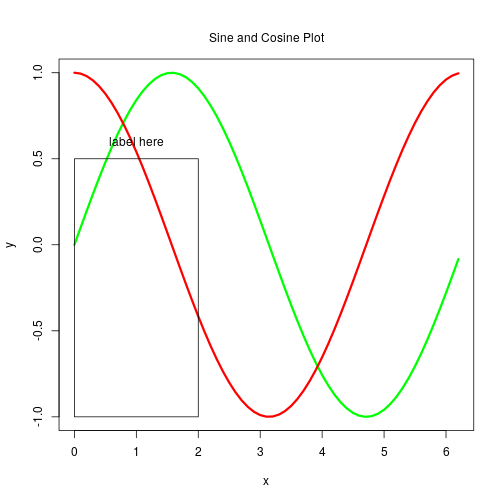

Big Data
Third Section
FCIS - ASU
Graphics in R
Today’s Lab
- Introduction to Graphics in R
- Examples of commonly used graphics functions
- Common options for customizing graphs
Computer Graphics
- Graphics are important for conveying important features of the data
- They can be used to examine
- Marginal distributions*
- Relationships between variables
- Summary of very large data
- Important complement to many statistical and computational techniques
Example Data
To view available datasets, type:
data()
To load a dataset into memory, type data(name of data set)
data(ChickWeight)
To view the loaded dataset type its name:
ChickWeight
The Data File
## weight Time Chick Diet
## 1 42 0 1 1
## 2 51 2 1 1
## 3 59 4 1 1
## 4 64 6 1 1
## 5 76 8 1 1
## 6 93 10 1 1
Summary of the Data File
summary(ChickWeight)
## weight Time Chick Diet
## Min. : 35.0 Min. : 0.00 13 : 12 1:220
## 1st Qu.: 63.0 1st Qu.: 4.00 9 : 12 2:120
## Median :103.0 Median :10.00 20 : 12 3:120
## Mean :121.8 Mean :10.72 10 : 12 4:118
## 3rd Qu.:163.8 3rd Qu.:16.00 17 : 12
## Max. :373.0 Max. :21.00 19 : 12
## (Other):506
Graphics in R
Plot()is the main graphing functionAutomatically produces simple plots for vectors, functions or data frames
Many useful customization options…
Plotting a Vector
plot(v) will print the elements of the vector v according to their index
# Plot weight for each observation
plot(ChickWeight$weight)

# Plot weight against their ranks
plot(sort(ChickWeight$weight))
Common Parameters for plot()
- Specifying labels:
- main – provides a title
- xlab – label for the x axis
- ylab – label for the y axis
- Specifying range limits:
- ylim – 2-element vector gives range for y axis
- xlim – 2-element vector gives range for x axis
A Labeled Plot
plot(sort(ChickWeight$weight), ylim = c(50,200), ylab = "Weight", xlab = "Rank", main = "Distribution of Weights")
Plotting Two Vectors
- plot() can pair elements from 2 vectors to produce x-y coordinates
- You can exclude vectors using:
plot(datasetname[-c(1,2)])
Plotting Two Vectors
plot(ChickWeight$Diet, ChickWeight$weight, xlab = "diet", ylab = "Weight",
main = 'Type of Diet Effect on Weight', col = "blue")

Plotting Contents of a Dataset
plot(ChickWeight)

Plotting Contents of a Dataset
plot(ChickWeight[-c(1)])
Histograms
- A diagram consisting of rectangles whose area is proportional to the frequency of a variable
- The parameter breaks is key:
- Specifies the number of categories to plot
- Specifies the breakpoints for each category
- The xlab, ylab, xlim, ylim options work as expected
Histograms
hist(ChickWeight$weight, col = "lightblue", xlab = "Weight", main = "Weight Histogram")
Histograms With Breaks
hist(ChickWeight$weight, col = "lightblue", xlab = "Weight",
main = "Weight Histogram", breaks = seq (0,400, by=10) )
Boxplots
- Generated by the boxplot() function
- Draws plot summarizing
- Median
- Quartiles (Q1, Q3)*
- Outliers – by default, observations more than 1.5 * (Q1 – Q3) distant from nearest quartile
boxplot(ChickWeight, col = rainbow(6), ylab = "ChickWeight Boxplot")

Boxplot for Weight
rug()can add a tick for each observation to the side of aboxplot()and other plots.The side parameter specifies where tick marks are drawn.
boxplot(ChickWeight$weight, col = rainbow(6), ylab = "ChickWeight Boxplot")
rug(ChickWeight$weight,side=2)
Customizing Plots
- R provides a series of functions for adding text, lines and points to a plot
- We will illustrate some useful ones, but look at demo(graphics) for more examples
- Type
<Return>or Press enter for more
Drawing on a plot
- To add additional data use
- points(x,y)
- lines(x,y)
- For freehand drawing use
- polygon()
- rect()
Text Drawing
- Two commonly used functions:
- text() – writes inside the plot region, could be used to label datapoints
- mtext() – writes on the margins
Plotting Two Data Series
x <- seq(0,2*pi, by = 0.1)
y <- sin(x)
y1 <- cos(x)
plot(x,y, col = "green", type = "l", lwd = 3)
lines(x,y1, col = "red", lwd = 3)
mtext("Sine and Cosine Plot", side = 3, line = 1)
Adding a Label & Rectangle
rect(0,-1,2,0.5)
text(1,0.6, "label here")

Plotting Functions
f <- function(x) x * (x + 1) / 2
x <- 1:20
y <- f(x)
plot(x, y)
mtext("Plotting the expression", side = 3, line = 2.5)
mtext(expression(y == sum(i,1,x,i)), side = 3, line = 0)
mtext("The first variable", side = 1, line = 3)
mtext("The second variable", side = 2, line = 3)
Symbolic Math Expressions
Multiple Plots on a Page
- Set the mfrow or mfcol options
- Take 2 dimensional vector as an argument
- The first value specifies the number of rows
- The second specifies the number of columns
- The 2 options differ in the order individual plots are printed
Multiple Plots on a Page
par(mfcol = c(3,1))
hist(ChickWeight $weight*1000, breaks = 10, main = "Weight (in mg)", xlab = "Weight")
hist(ChickWeight$weight, breaks = 10, main = "Weight (in g)", xlab = "Weight")
hist(ChickWeight$weight/1000,breaks = 10, main = "Weight (in kg)", xlab = "Weight")
Saving R Plots
- R usually generates output to the screen
- R can also save its graphics output in a file that you can distribute or include in a document prepared with Word or
LATEX. FromFile -> Save As
Practice
Plot two graphs as follows:
Plot1: Histogram of ChickWeight weight vector (in kgs instead of grams). Having main label “Weight in Kgs” and 8 breaks.
Plot 2: the box plot of the Weight vector in Kgs in red color. Two plots in the same row
Solution
hist(ChickWeight$weight/100, breaks=20, main = "Weight (in kg)", xlab = "Weight")
boxplot(ChickWeight$weight/100, col = "red")
علم + عمل + أخلاق = حضارة
Thanks for coming!
Eslam Ali Data Scientist